SAX101-01
Working With Your First Sports Dataset

Learn sport analytics by doing
A guided public resource for learning Python, data concepts, and sport analytics through small practical wins.
Tell us where you are starting
Recommended start
You will begin with rows, columns, files, and a small sports dataset before writing your first Python functions.
Your learning path
Working With Your First Sports Dataset
Summarising and Visualising Sports Data
Replicate one bounded output from a sport analytics research article.
Explore the formal La Trobe pathway when you are ready for deeper training.
Explore the MSA